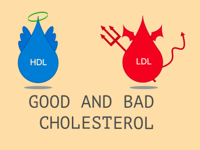
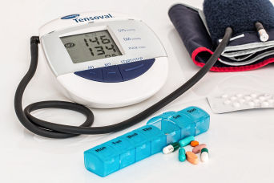

MEROKOK
Risiko terkena serangan jantung meningkat kepada 3 hingga 6 kali.
TEKANAN PERASAAN
Bila alami tekanan perasaan, degupan jantung akan meningkat dan tekanan darah akan meningkat.

TINGGI KOLESTROL
Banyak mengambil makanan yang tinggi kandungan kolestrol jahat.

KURANG BERSENAM
Risiko terkena serangan jantung meningkat kepada 1 hingga 2 kali.

DARAH TINGGI
Menggalakkan berlakunya penyempitan saluran darah pada jantung.
KENCING MANIS @ DIABETIS
Risiko mendapat serangan jantung meningkat kepada 2 hingga 3 kali.
SHARE THIS PAGE!